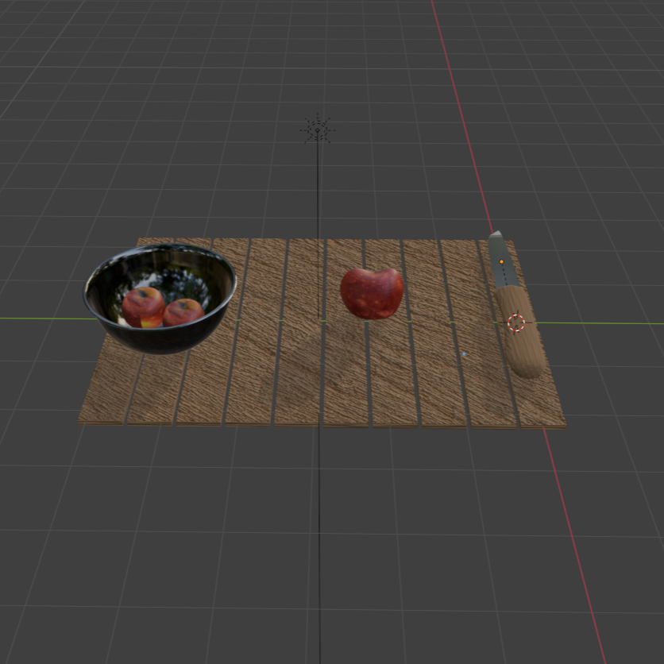

Bodegón
Realiza una composición con los elementos trabajados en clase:
- Frutero (material procedural)
- Manzana (material pintado a partir de las imágenes proporcionadas)
- Cuchillo (materiales a elección del alumno)
- Mesa (materiales usando texturas de internet)
Debes iluminar la escena y dejar preparada la cámara para poder hacer un renderizado de la vista de la escena que desees.
Debes subir:
- Fichero blender
- Carpeta de texturas
- Renderizado de una imagen
